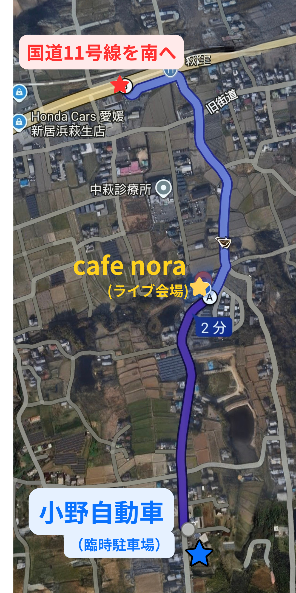

全体ルート

国道11号線から「cafe nora」までの道順です。
目的地検索: Googleマップで「小野自動車」を検索すると2箇所表示されます。西側の店舗へお越しください。
所要時間: 国道11号線からの所要時間は約4分です！
道順:
1. 国道11号線から南へ進みます。
2. 「旧道」を越えるとY字路があります。そこを右に進んでください。
3. Y字路を右折後、約100m直進すると「cafe nora」があります。
4. 「cafe nora」を通り過ぎて、そのまま南へ進むと「小野自動車」があります。
駐車場への行き方（5ステップ）
SUBARU の看板が目印です
国道11号線から南へ入り、旧道を過ぎてすぐのY字路は迷わず右へ。約100m進んだ右手に「cafe nora」が見えてきます。
「cafe nora」を通り過ぎて更に南へ進みます。
青いSUBARUの看板が目印。看板手前か、過ぎて少し先の左手が駐車場です。

道路からの全景

目印のSUBARU看板
小野自動車の事務所前は通過してください
カーポートや事務所の前は駐車禁止です。そのまま奥へ進んでください。

ここは駐車禁止

事務所前も駐車禁止
広い駐車場も通過してください
並んでいる車はすべてお店の所有車です。ここは駐車禁止。さらに奥へ進んでください。

ここも駐車禁止（店舗所有車）
駐車場に到着！看板が目印です
損保ジャパン（赤い看板）と三菱モーターズ（黒い看板）が見えたら到着です。
白線はありませんので、奥から詰めて整列駐車にご協力ください。
周辺に水路がありますので、足元に十分ご注意ください。

道路からの見え方


三菱モーターズ黒看板
奥に止まっている車はそのままでOK
東側の奥にナンバープレートのない車が止まっています。動かない固定車ですので、近くに寄せて停めていただいて大丈夫です。奥から詰めてご駐車ください。

ナンバーなし＝固定車。近くに停めてOK
駐車場をご利用の際のお願い
- カーポート・事務所前・お店の広い駐車場は駐車禁止です
- 白線がないため、奥から詰めて整列駐車にご協力ください
- 周辺に水路があります。足元に十分ご注意ください
- 夜間の出入りの際は静かにお願いいたします
- 駐車場内での事故・盗難等につきましては、主催者は一切の責任を負いかねます
- ゴミのお持ち帰りにご協力ください